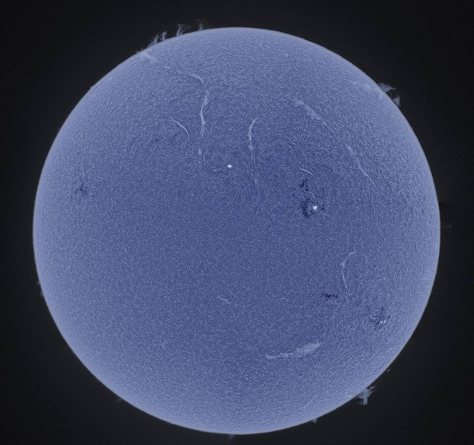

Снимок Солнца сделанный в линии H-альфа
Стоит отметить, что Солнце, не самая большая и горячая звезда во Вселенной, но для нас оно занимает особое место. Так как без него не смогла бы существовать не сама Солнечная система, ни планеты, входящие в ее состав, ни существа, живущие на этих планетах. В недрах Солнца происходят ядерные реакции по обращению водорода в гелий, выделяющие огромное количество тепла – на поверхности Солнца около 5000°С. Несмотря на мощнейшую гравитацию, Солнце покидают некоторые заряженные частицы, которые называются солнечный ветер. Магнитное поле Земли отражает их, а в верхних слоях атмосферы на полюсах нашей планеты, все же можно наблюдать солнечный ветер в виде северных сияний.